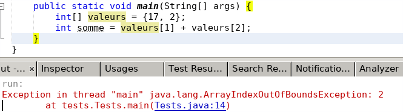
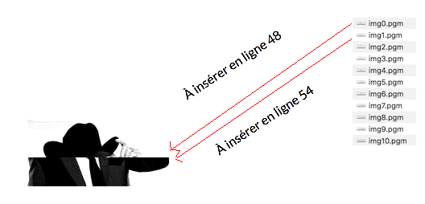

TP Gestion des fichiers
Lors cette séance vous allez découvrir comment manipuler les fichiers en Java.
Lecture / écriture dans les fichiers
Fichiers physiques et logiques
En Java, comme dans la plupart des langages, nous faisons la différence entre :
- les fichiers physiques désignés par leur nom (et leur chemin) sur le système de fichiers, donnés par une chaîne de caractères. Par exemple "/etc/hostname" ou "C:\Temp\test.txt".
- les fichiers logiques (parfois appelés descripteurs, flux, ...). Il s'agit d'objets permettant de manipuler les fichiers dans le langage de programmation : les ouvrir, fermer, lire, écrire, etc. Par exemple un objet FileReader pour lire un fichier. On peut alors utiliser des variables pour manipuler les fichiers.
FileReader monFichier = new FileReader("/home/identifiant/unfichier.txt");
crée un objet "monFichier" de type FileReader (fichier logique) qui ouvre
le fichier physique "/home/identifiant/unfichier.txt"
et permet ensuite d'en lire le contenu via
monFichier.read().
Cela dit, cette dernière méthode ne fait que lire, caractère par caractère, et sans buffer. Il existe en Java d'autres classes permettant par exemple de lire ligne par ligne, avec buffer (pour optimiser les accès à la mémoire), etc. C'est ce que nous verrons dans la Question 1.
Gestion des exceptions
La manipulation des fichiers donne lieu à beaucoup de problèmes potentiels d'accès au fichier : lire un fichier absent ou protégé, créer un fichier dans un dossier inexistant, etc.
Java introduit un mécanisme pour gérer les erreurs à l’exécution : les exceptions. Les exceptions servent à détecter une erreur à l'exécution, pas forcément liée à la manipulation des fichiers.
Ainsi vous avez certainement déjà croisé certaines exceptions, par exemple lorsque vous tentez d'accéder à une case d'un tableau à une position incorrecte (en dehors des bornes, "out of bounds") : ArrayIndexOutOfBoundsException. 
Une exception est levée (throw) lorsqu'un problème est détecté. Elle peut être levée par Java, ou par votre propre code (vous verrez comment au S2). Dans l'exemple ArrayIndexOutOfBoundsException ci-dessus, l'exception a été levée par Java (au moment de l'évaluation de valeurs[2]) et a fait planter le programme : il est stoppé avec comme message d'erreur la pile d'appel (stacktrace) qui a mené à l'exception.
Il est possible de rattraper (catch) une exception, pour éviter de stopper le programme, en traitant les cas d'erreurs détectés par les exceptions. Cela se fait par l'intermédiaire d'un try/catch :
FileReader monFichier = null;
try {
monFichier = new FileReader("unFichier.txt");
} catch (FileNotFoundException e) {
System.out.println(
"Fichier unFichier.txt non trouvé : " + e);
}
if (monFichier != null) {
...
}
Dans le code ci-dessus, on déclare un FileReader, puis on tente
de l'initialiser à partir du fichier "unFichier.txt".
Ce constructeur lève une exception FileNotFoundException
si le fichier n'existe pas.
On place donc l'appel à ce constructeur dans un try,
et le bloc catch sera exécuté si l'exception est levée
(ici on affiche juste un message).
Notez que l'exception est elle-même un objet,
accessible via la variable "e", et de type FileNotFoundException
(c'est une classe).
Dans tous les cas, le programme continue ensuite avec le "if",
qui permet ici de tester si l'ouverture du fichier a bien eu lieu.
Attention : les exceptions sont levées à l'exécution (lorsqu'un problème intervient), pas à la compilation. C'est tout leur intérêt. Les exceptions sont levées par la JVM (java) alors que les erreurs de compilation sont levées par le compilateur (javac).
Question 1
Lisez la description des classes suivantes et répondez au questionnaire. Je vous encourage à réaliser des tests avant de répondre aux questions.
Notez que BufferedReader et BufferedWriter sont des cas particuliers de Reader et Writer, et que par conséquent ils disposent de leurs méthodes (voir "Methods inherited from", sous la description des méthodes).Trouvez l'erreur
Créez un projet FileManager à partir du code dans code/ et lisez la classe FileText.
Question 1
Que fait la méthode action1() ?Question 2
Lisez les tests unitaires de la méthode
testAction1()et répondez aux questions. Attention, posez-vous la question "d'où est exécuté mon code ?". Mon code a-t-il accès aux fichiers dont je lui donne le chemin dans mon code ? Les tests ci-dessous partent du principe que les fichiers sont placés au bon endroit. Avant de tester le code, ouvrez un terminal, placez-vous dans le répertoire "ressource" de votre projet NetBeans, et exécutez la commande "bash script.sh".
Question 3
Que fait la méthode action2() ?
Ecrire les TU et la Javadoc de cette méthode.
Question 4
La méthode
void action3(String fileName)fait appel à un web service qui lui retourne une chaîne de caractères (une pensée du meilleur philosophe encore vivant). Cette chaîne de caractères est écrite dans le fichier dont le nom est passé en paramètres.
Étudiez les TU de cette méthode et répondez aux questions suivantes :
Jeu au format ASCII
Dans cet exercice, nous vous proposons de compléter le code d'un projet Java permettant de jouer à un (mini) jeu via votre terminal. Le jeu est simple, le caractère '@' représente le héros. Pour le déplacer vers la droite (seule direction possible) il faut entrer au clavier le caractère 'm' (move). Si le héros est à côté d'un trou (caractère 'H'), il doit sauter par dessus en appuyant sur la touche 'j' (jump). S'il fait un 'm'ove à côté d'un trou, il ne se passe rien. De même s'il fait un 'j'ump alors qu'il n'y a pas de trou. Si le héros arrive à la sortie (caractère 'S') alors la partie est gagnée. La vidéo ci-dessous illustre le déroulement d'une partie.
Question 1
Le challenge de cet exercice sera de compléter le code de ce projet sans jamais utiliser de tableau. Vous aurez uniquement le droit de lire et écrire dans un fichier.
Toujours dans le même projet, ouvrez et lisez le contenu du fichier
FileGame.java.
-
void initLevel()
crée le premier niveau dans le fichier "result.txt". void displayLevel()
permet d'afficher dans le terminal le niveau.
FileManager.java
-
public static void main(String[] args)
la boucle de jeu : après avoir initialisé le niveau et l'avoir affiché, on demande à l'utilisateur de saisir un caractère au clavier. Le héros se déplace en fonction des règles énoncées plus haut et le niveau s'affiche. Tout ça est répété tant que la partie n'est pas gagnée.
Question 2
Complétez le code de la fonction
boolean moveHero(String mouvement). Cette fonction doit successivement :
- lire le contenu du fichier result.txt pour trouver où sont : le héros, le prochain trou, et la sortie ;
- définir la nouvelle place du héros en fonction du caractère passé en paramètre et des règles du jeu ;
- mettre à jour le fichier result.txt.
Lors des trois premières itérations de la boucle, le fichier "result.txt" doit successivement contenir le texte suivant :
*********************************** *@ H H H S ***********************************puis
*********************************** * @ H H H S ***********************************puis
*********************************** * @ H H H S ***********************************
Si tout fonctionne bien, à la fin le fichier "result.txt " doit contenir le texte suivant :
*********************************** * H H H @ ***********************************
Fichier image à reconstruire
Le visage du prix Nobel de la paix de cette année vient de vous être envoyé en exclusivité. Malheureusement, le fichier image est incomplet. Il manque le milieu de l'image.
Les morceaux manquants vous sont envoyés un par un. Il y en a 11.
Vous allez devoir reconstruire vous-même l'image pour découvrir en exclusivité qui est le nouveau prix Nobel de la paix.
Tout d'abord lisez attentivement la documentaiton du format pgm P2.
Voici les informations dont vous avez besoin pour reconstruire l'image :
- L'image d'origine (que vous auriez dû recevoir) fait 200 pixels de largeur et 150 pixels de hauteur.
- L'image reçue fait 200 pixels de largeur et 84 pixels de hauteur.
- Il y a 11 imagettes (largeur 200 px, hauteur 6 px) fournies à intégrer dans l'ordre au milieu de l'image à partir de la ligne 48.
- L'image ci-dessous explique comment insérer les imagettes. La première ligne de l'imagette numéro 0 aurait dû être en ligne 48 de l'image d'origine, la première ligne de l'imagette numéro 1 aurait dû être en ligne 54, la première ligne de l'imagette numéro 2 aurait dû être en ligne 60, ...

Question 1
Dans le fichier
FileImage.java, compléter la fonction
static void mergeImageFileWithMissingParts()permettant de fusionner l'image incomplète avec les 11 morceaux fournis. Il vous est interdit de copier le contenu des pixels dans un tableau. Vous devez tout faire avec des fichiers (seuls les tableaux de fichiers sont autorisés).